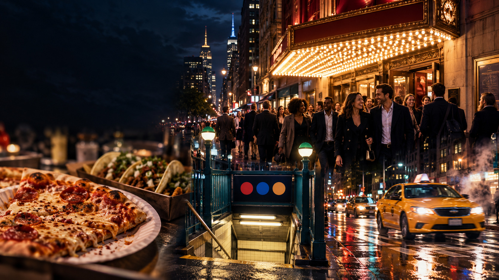
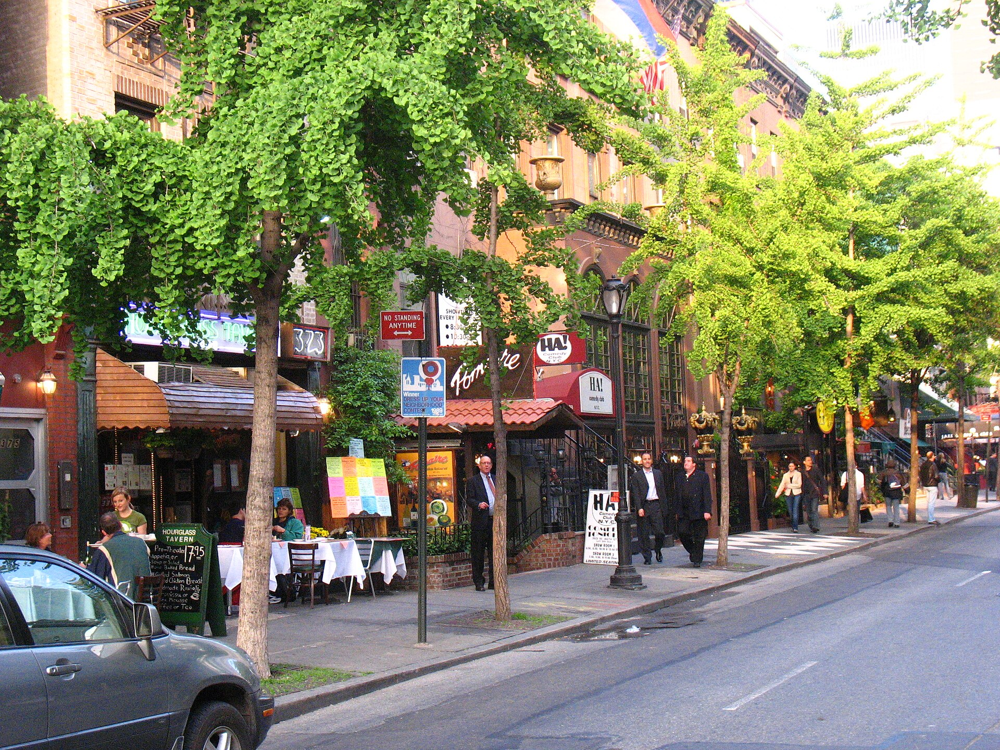

NYC Trip Planning
What to Do in NYC After Broadway: Food, Subway, Taxi, and Late-Night Options
A realistic plan for eating, getting home, handling subway changes, finding a taxi, and avoiding the post-Broadway scramble — matched to your exit time, hotel, and group

You have just walked out of a Broadway theater. It is 10:15 p.m., Times Square is crowded, someone in your group is hungry, and everyone wants a different answer: dinner, hotel, subway, taxi, or one quick drink before bed.
The best choice depends on details that are easy to overlook: the show's actual ending time, the theater's location, your hotel, the weather, the age and energy of your group, the restaurant's kitchen hours, and whether the subway route home is direct tonight.
The practical answer is simple: choose one realistic food plan, one backup, and one sensible route home before the curtain falls. That small amount of planning keeps the rest of the night from becoming an expensive walk around Times Square. For visitors who arrive with luggage or are still choosing a hotel neighborhood: What to Do in NYC Before Hotel Check-In →
📍
Essential NYC Resource
The Ultimate NYC Bucket List Map
A personal Google Map with hundreds of hand-picked places across all of New York City — restaurants, food spots, neighborhoods, and local favorites pinned and ready to open in Google Maps. Use it before the show to find what's closest to your theater, your hotel, and the subway entrance you'll actually use.
Get the NYC Bucket List Map →
The Quick Answer: What to Do After Broadway
| Situation | Best Choice | Why | Main Catch |
|---|
| You want a proper sit-down meal | Reserve on Restaurant Row or a nearby theater-district restaurant | You stay close to the theater and avoid a second long journey | A reservation does not always mean the kitchen will serve late; check the last seating or kitchen cutoff |
| You want food quickly | Empanada Mama, Joe's Pizza, or Los Tacos No. 1 | Counter service is usually more realistic after a late curtain | Lines and limited seating are still possible |
| You have children | Carmine's if reserved; Junior's or a quick-service backup if not | Familiar food, large portions, and a short walk | Carmine's can be loud and busy; a formal dinner may be too much for tired children |
| You are exhausted | Go directly to the hotel and eat nearby or order takeout | The least stressful plan is often the one with no extra neighborhood change | You may give up the "perfect" dinner for a much better night |
| You are staying near Times Square | Walk to the hotel after food | Avoids car congestion and a subway decision | Side streets can still be crowded immediately after curtain time |
| You are staying downtown | Use a direct subway line if available, or take a yellow taxi | Downtown routes are often simple from Times Square | A small hotel-location difference can change the best line |
| You are staying on the Upper West Side | Take the 1/2/3 or another direct uptown route after checking service | A direct train is usually easier than a transfer | Use the exact hotel address in the MTA app; "Upper West Side" covers a large area |
| You are staying in Brooklyn or Queens | Take a direct trunk line when possible; use a taxi if transfers multiply | A direct ride avoids late-night navigation | A route that looks short on the map may require an awkward transfer |
| The show ends after 11 p.m. | Switch to a late counter-service plan | Full-service kitchens may be closed or taking their last tables | Posted restaurant closing hours may not equal kitchen hours |
| You have no reservation | Try counter service first, then one nearby walk-in restaurant | You are not gambling the entire evening on one dining room | "Walk-ins welcome" never means a table is guaranteed |
| It is raining or freezing | Stay close to the theater or use a taxi after walking to a practical curb | Reduces the miserable exposed walk and waiting time | Ride demand and traffic may be worse than usual |
| The subway has a service change | Check the MTA app, then choose a simple alternate line, bus, or taxi | You avoid a complicated transfer when tired | The closest entrance may be closed even when the station is open |
| You need to catch a late train | Eat something quick and leave a generous margin | A missed train is more expensive than a less ambitious dinner | Do not book a restaurant across Manhattan |
| You are heading to the airport | Use a preplanned route or car service and eat near the theater or airport route | Luggage and a fixed departure matter more than atmosphere | Allow for traffic, security, and elevator problems |
| You have luggage | Store it before the show or go directly to your hotel | Broadway theaters generally do not hold luggage | A large bag can make stairs, crowded platforms, and taxis much harder |
What Works Best by Situation
Best sit-down area
Restaurant Row, especially with a reservation. Hell's Kitchen is a better bet when you want to escape Times Square and stay within walking distance.
Best late-night casual
Hell's Kitchen and the late counter-service spots around the theater district.
Best for families
A reserved table at Carmine's or an uncomplicated meal at Junior's, with a quick-service backup already chosen.
Best quick bite
Empanada Mama, Joe's Pizza, or Los Tacos No. 1, depending on the line and your group's preferences.
Best transport (most visitors)
Walking for nearby hotels; otherwise a direct subway ride with no unnecessary transfer.
Best transport when tired
A yellow taxi — especially for older travelers, children, luggage, bad weather, or a hotel that is awkward to reach by subway.
Decide Before the Curtain Falls
Do this before the show begins:
1
2
Add time for the intermission, curtain call, and the crowd leaving the building
3
Pick one restaurant area rather than searching all of Manhattan
4
Save one restaurant and one backup in your phone
5
Check the posted dining hours and whether a kitchen cutoff or last seating is listed
6
Look at the route from the theater to the hotel, not just the route from Times Square generally
7
Decide whether walking, subway, taxi, or rideshare makes sense for your group
8
Leave room to abandon dinner if the show starts late or runs long
The mistake is waiting until everyone reaches the sidewalk to begin researching. Hundreds of people leave theaters at roughly the same time, restaurant tables disappear quickly, and a search result showing "open until midnight" may only describe the bar or the dining room — not the kitchen.
How Late Will You Actually Be Out?
Broadway running times vary widely. Many musicals run about two and a half hours including an intermission, while some plays and shorter productions are much shorter. The exact exit still depends on a late start, intermission length, curtain-call timing, and theater procedures.
Show / Format
Likely Exit
What Is Realistic Afterward
7:00 PM evening show
~9:25–9:55 PM
A reserved dinner is possible; counter service is easier if you want to eat immediately
7:30 PM evening show
~9:55–10:25 PM
Restaurant Row and Hell's Kitchen can work, but late kitchen hours begin to matter
8:00 PM evening show
~10:25–10:55 PM
Treat a full-service dinner as a reservation-only plan; keep a quick backup
Sunday evening show
Similar runtime
Reduced Monday-adjacent hours make your backup more important
Monday or Tuesday show
Similar runtime
Some restaurants close earlier or do not open; verify the day specifically
Matinee
Mid-afternoon to early evening
Dinner is much easier; you can choose the neighborhood rather than the closing time
Longer musical
Add ~10–25 extra minutes
A show that begins at 8 may not put you on the street until near 11
Shorter play or no-intermission
Often 80–110 minutes
You have more flexibility, but do not assume every play ends at the same time
Show ending near midnight
Midnight or later
Use late counter service, takeout, or go directly home; avoid a cross-town dinner mission
A useful rule of thumb: If your dinner reservation is less than 30 minutes after the show's advertised end, it is fragile. If it is less than 15 minutes after the expected end, it is usually a bad idea unless the restaurant is inside or directly beside the theater and has a forgiving late-seating policy.
Where to Eat After Broadway
The right restaurant is the one that matches your actual exit time, not the one with the most exciting menu.
Best Sit-Down Dinners
Best Restaurant Row ChoiceJoe Allen326 W 46th St • Restaurant Row
Best for: Couples, theater fans, and adults who want the atmosphere of Restaurant Row without traveling away from Midtown.
Skip if: You are leaving a long show after 10:45 PM, have no reservation, or need a guaranteed fast meal.
The catch: The official hours describe operating hours but do not publish a separate kitchen cutoff or last seating. Confirm when booking. For a long 8:00 PM show, do not assume a table will still be serving when you exit.
Backup: Empanada Mama in Hell's Kitchen or a nearby counter-service option.
Confirm Late Seating FirstGlass House Tavern252 W 47th St • Theater District
Skip if: You are relying on a same-night walk-in after a late show and cannot tolerate a failed plan.
The catch: The restaurant's current official page displays conflicting late-closing information in different sections. Treat listed hours as a prompt to call, not as proof of a late kitchen or last seating.
Backup: Junior's or Empanada Mama.

Restaurant Row on West 46th Street. Photo: Roger Rowlett, Wikimedia Commons, CC BY-SA 2.5.
Best for Groups and FamiliesCarmine's Times Square200 W 44th St • Times Square
Skip if: You want a quiet, fast, small-portion meal or your group is already too tired to share a large dinner.
The catch: It is large, busy, and lively. The portions are designed for sharing and the room is not the place to expect a hushed romantic meal.
Backup: Junior's for a simpler meal or Empanada Mama for speed.
Pre-Show or Early Post-Show OnlyBecco355 W 46th St • Restaurant Row
The catch: The restaurant is close, but closeness does not overcome an early closing time. Closed Monday.
Backup: Joe Allen for an earlier arrival; late counter service for a later exit.
Useful Near Ninth AvenueMarseille / 5 Napkin Burger630 Ninth Ave • Hell's Kitchen
The catch: The walk is easy in good weather but feels longer in rain, freezing wind, or with tired children.
Backup: Empanada Mama at 765 Ninth Avenue, which is open 24/7 according to its official business page.
Best Walk-In Options
"Walk-ins welcome" and "no reservation required" are not the same thing.
Carmine's
Says walk-ins are welcome, but a popular post-show wave can still fill the room
Joe's Pizza / Los Tacos No. 1
Use counter service, so they are often more realistic without a reservation than a formal dining room
Empanada Mama
A strong backup because you can order quickly and take food away if seats are scarce
Junior's
Large dining operation with late listed hours, but late-night demand can still create a wait
Bar seating
Can be easier than a table, but not a good assumption for children, larger groups, or anyone who needs a comfortable seat
Check the current seating policy and kitchen status before relying on any walk-in plan. For planning a full food day without reservations: How to Build a NYC Food Day Without Reservations →
Best Quick Meals Near Broadway
| Food Type | Practical Choice | How Quickly You Can Eat | What to Know |
|---|
| Pizza | Joe's Pizza, 1435 Broadway | Often quick once you reach the counter | Lines, limited seating, and changing late hours are possible; verify the current schedule |
| Empanadas | Empanada Mama, 200 W 40th St or 765 Ninth Ave (24/7) | Usually fast and easy to take away | The Ninth Avenue location is the stronger late-night fallback with 24/7 official listing |
| Tacos | Los Tacos No. 1, 229 W 43rd St | Counter service can be quick, but queues are common | Current hours run to midnight Mon–Sat and to 10:00 PM Sunday |
| Ramen | Ippudo Westside, 321 W 51st St | Allow time for a possible wait | Good when you want a real hot meal near the western theaters; verify hours and kitchen cutoff |
| Italian family-style | Carmine's | Not a quick bite unless the table is ready | Better for a seated group meal than a rushed solo stop |
| Cheesecake and diner food | Junior's at 1515 Broadway or 1626 Broadway | Flexible if you can get seated | Current listed hours run to midnight Tue–Thu and to 1:00 AM Fri–Sat |
| Korean food | Koreatown around 32nd Street | Some restaurants serve late, but not all | It is a neighborhood choice, not a universal late-night guarantee; verify the specific restaurant |
| Dumplings | A verified current counter-service restaurant in Koreatown or near your hotel | Potentially quick | Hours and seating vary too much to treat the category as a plan by itself |
| Sandwiches | A deli, hotel restaurant, or verified current shop near the route home | Usually fast | The best choice when the group needs food more than atmosphere |
| Diner food | Junior's or a hotel-area diner | Moderate, depending on the queue | Reliable for a mixed group when a formal reservation is unrealistic |
| Food hall | A currently open hall near your route | Flexible if several counters are open | Food halls can close individual counters before the building's posted hours |
| Bakery or grab-and-go | Dessert, pastry, or prepared food near the theater or hotel | Fastest | Not a substitute for dinner if the group is genuinely hungry |
Best Late-Night Food After Broadway
The key distinction is between the posted dining-room closing time and the last time the kitchen accepts orders.
After 10:00 PM
Carmine's, Junior's, Joe Allen, Los Tacos No. 1, Joe's Pizza, and Empanada Mama locations may be options on some nights — check the date and current hours
After 11:00 PM
Empanada Mama Hell's Kitchen is the strongest official option with 24/7 listing. Junior's lists midnight Tue–Thu and 1:00 AM Fri–Sat. Carmine's lists midnight on Fri–Sat.
Around midnight
Use Junior's, Empanada Mama, Joe's Pizza, or a verified current counter-service restaurant. Do not assume a full menu is available just because the front door is open.
After midnight
Empanada Mama Hell's Kitchen is the clearest current choice. Other late hours — Joe's Pizza, Times Square Empanada Mama — should be verified on the day because listings do not always agree.
Takeout and limited menu
Empanadas, pizza slices, tacos, sandwiches, and hotel takeout are usually more realistic than a full dinner after midnight
Monday and Tuesday nights
Assumptions fail most often on these nights. Joe Allen and Becco currently list Monday closures. Verify every restaurant before committing.
See also the NYC Tourism late-night dining guide for additional context, keeping in mind that published hours change and should be verified directly.
Best Dessert After Broadway
- Cheesecake: Junior's is the practical choice, with Broadway locations and late posted hours on several nights
- Cookies and pastries: Check a current business listing near the theater or hotel; do not build the route around a bakery unless its hours are confirmed for that night
- Ice cream: Useful after an early show or in warm weather, but less dependable after midnight
- Late-night coffee: A hotel lobby café, diner, or restaurant with a late beverage service may be easier than a dedicated coffee shop
- Dessert cafés: Make this a short stop after dinner, not the plan for a group that has not eaten since late afternoon
Practical recommendation: if dinner is already handled, stop at Junior's or choose dessert near the hotel. If dinner is not handled, do not let a cheesecake plan disguise the fact that everyone needs a meal.
Best Options for Families
Families usually need four things at once: predictable food, a bathroom, a short walk, and a low chance of a long wait.
Carmine's
The strongest planned family dinner when you reserve and your group likes shared Italian food.
Junior's
A flexible choice for a mixed group that wants a meal and dessert in one place.
Empanada Mama
Works when children need food immediately and the adults can accept a fast-casual meal.
Hotel food
Often underrated. If your hotel is nearby, a short walk and a familiar room can beat another crowded restaurant.
Dietary Needs After Broadway
The safest approach is to match the requirement to information the restaurant actually publishes.
Vegetarian: Carmine's publishes vegetarian options; Empanada Mama and many casual restaurants offer meat-free choices, but confirm fillings and preparation
Vegan: Look for a current vegan menu or ask about ingredients before ordering. Do not assume a vegetarian empanada or taco is vegan.
Gluten-free: Carmine's publishes a
wheat/gluten allergy menu, but its own notice says the kitchen is not allergen-free and cross-contact is possible. Joe's has listed a gluten-free cheese pizza, but that does not automatically mean a gluten-free kitchen.
Halal: Confirm the specific restaurant's current certification or preparation. A generic label is not proof of halal food.
Kosher: Mr. Broadway at 209 W 38th St is a Glatt Kosher option with certification on its official site, but its hours are not a dependable late post-show plan.
Food allergies: Call ahead and explain the allergy. Never promise an allergy-safe meal unless the restaurant provides clear, current information about its procedures.
Picky children: Pizza, plain pasta, rice, dumplings, sandwiches, and simple diner food are the practical categories. Keep one familiar backup near the hotel.
Restaurant Row vs. Hell's Kitchen vs. Koreatown vs. Times Square
| Area | Best For | Walking Distance | Food Type | Late-Night Reliability | Main Catch |
|---|
| Restaurant Row | A planned sit-down meal close to the theaters | ~2–8 minutes from the central cluster | Italian, American, French, theater-district dining | Good early; mixed late | Reservation pressure and earlier kitchen cutoffs |
| Hell's Kitchen | Independent restaurants, Ninth Avenue, a calmer meal away from the core | ~7–15 minutes from many theaters | Casual restaurants, burgers, ramen, empanadas, international | Best late fallback when a specific venue is confirmed | The extra walk feels long in bad weather or with tired children |
| Koreatown | A specific late Korean meal or a deliberate food detour | ~15–25 minutes on foot or a short subway/taxi ride | Korean barbecue, noodles, dumplings, casual Asian food | Variable; restaurant-by-restaurant | Not worth the trip unless the exact restaurant is open and your group wants it |
| Times Square | Fastest access and familiar chains | ~1–8 minutes | Chains, casual restaurants, slices, tacos, dessert | Mixed; many rooms are busy rather than truly late | Easy to settle for a mediocre meal or wait in a tourist-heavy line |
Restaurant Row
Best for a reserved dinner before the show or immediately after an earlier performance. Not the best no-reservation strategy at 10:45 PM.
Hell's Kitchen
Best all-purpose post-show area when the weather is reasonable and you have chosen a specific restaurant. Empanada Mama's 24/7 listing provides a particularly useful late backup. Skip the walk if your group is exhausted, carrying bags, or dealing with heavy rain or freezing wind.
Koreatown
Worth it for food-focused visitors with a confirmed destination. Not the default choice for families who simply need dinner.
Times Square
Best for a fast fallback or a hotel nearby. Move one or two blocks west when you want a better meal and have the energy.
The Ultimate NYC Bucket List Map is most useful here as a pinned Google Map of food spots, attractions, and neighborhoods. Open it in Google Maps for live directions and nearby planning rather than treating it as a fixed restaurant ranking. Get the map →
What to Do If You Have No Reservation
Use this order of operations:
1
Do not stand in the middle of Times Square searching randomly. Move to the edge of the crowd and decide whether you are eating near the theater or near the hotel.
2
Check the actual kitchen hours. A restaurant listed as open until midnight may stop seating earlier.
3
Choose the closest realistic area. Restaurant Row, Ninth Avenue, or a counter-service spot is usually better than crossing Manhattan.
4
Call or check the current reservation platform. Ask specifically about a table, bar seating, last seating, and the kitchen — not only "Are you open?"
5
Use quick service if the group is already hungry. Waiting for a perfect table is a bad trade when children or tired adults need food now.
6
Keep dessert or takeaway as the final backup. A slice, empanada, sandwich, or hotel-room dessert can rescue the night.
7
Do not travel across Manhattan for a restaurant unless it is genuinely worth the journey. The restaurant must justify the transfer, the weather, and the risk of arriving after the kitchen closes.
Know the difference:
No reservation required: The restaurant may use counter service or may simply accept walk-ins. It does not promise a table.
Walk-ins accepted: You may join the queue if space becomes available.
Walk-ins sometimes available: The practical wording for a popular restaurant on a performance night.
Bar seating only: May be the only immediate option, and may not work for children or a larger group.
Counter service: Usually the best backup for a late exit.
Reservation required after a certain time: Ask whether the policy applies to all tables or only prime dinner hours.
Subway After Broadway
The subway is often the best way home after Broadway, but only when the route is direct and the service is normal. Broadway theaters sit close to several useful stations: Times Sq–42 St, 42 St–Port Authority Bus Terminal, 49 St, 50 St, 47–50 Sts–Rockefeller Center, and 34 St–Herald Sq. The closest-looking entrance is not always the most useful one: a station complex can have multiple entrances, closed stairways, or an elevator several blocks from the theater. For a deeper subway primer: I Wish Someone Had Explained the NYC Subway Like This →
Basic Subway Rules for First-Time Riders
Downtown usually means south toward Lower Manhattan; uptown means north toward Upper Manhattan. Read the platform sign rather than guessing from the street.
A direct train is usually better than a theoretically faster route with a transfer
Check whether a train is running local or express, especially late at night
If the nearest entrance is closed, walk to another entrance in the same station complex before changing the entire route
If the app suggests two late transfers, compare it with a taxi or a simple bus
Pay with OMNY or another accepted contactless method. MetroCard sales and refills ended January 1, 2026.
Keep children close, fold strollers where required, and use the blue Help Point if you need station assistance
Typical Hotel Routes After Broadway
These are planning patterns, not promises. Use the exact hotel address and current service status before boarding. For choosing a hotel neighborhood: Where to Stay in NYC →
| Hotel Area | Recommended Transport | Complexity | Main Risk | Better Backup | Children | Older Travelers | When Taxi May Be Worth It |
|---|
| Times Square | Walk | Very low | Crowds and blocked sidewalks | Walk one avenue away | Excellent if route is short | Excellent | Heavy rain, luggage, or mobility limits |
| Midtown East | Walk east or take a simple route toward Grand Central | Low to medium | Choosing a station entrance on the wrong side | Yellow taxi from a side street | Good | Good | Hotel is far east or group is tired |
| Upper West Side | 1/2/3 uptown, or C from 42 St–Port Authority | Low when direct | Wrong uptown platform or late service change | Taxi or bus | Good | Good if elevator is confirmed | Farther-north hotel, bags, or late disruption |
| Upper East Side | Route toward Lexington Ave, often with a transfer, or taxi | Medium | Complicated transfer late at night | Taxi or simpler route with more walking | Mixed | Taxi often easier | Almost always worth considering for a tired group |
| Chelsea | 1/2/3 downtown or A/C/E toward 34th/Penn | Low to medium | Choosing a station far from the hotel | Walk from a nearer stop or taxi | Good | Good | Hotel is west of the line or group has luggage |
| Greenwich Village | 1 toward Christopher St or A/C/E toward West 4th | Medium | Streets and exits do not line up with the hotel | Taxi from Midtown | Good for older children | Taxi may be simpler | Rain, late service change, or hotel far from station |
| SoHo | R/W or A/C/E toward Canal/Spring | Medium | Picking the wrong Canal Street station | Taxi or walk from a better stop | Mixed | Taxi often easier | Bags, rain, or hotel far from platform |
| Lower Manhattan | 1/2/3 downtown or R/W/A/C/E | Low to medium | Confusing downtown platforms and exits | Taxi | Good on a direct train | Good if direct | Multiple transfers or very late arrival |
| Long Island City | 7 or E, depending on hotel | Low to medium | Hotel is farther from the chosen station | Taxi or hotel-area pickup | Good if direct | Good if elevator available | Late-night transfer, luggage, or bad weather |
| Williamsburg | A/C/E to a connection with the L, or the exact app route | Medium to high | A transfer at a busy station late at night | Taxi | Mixed | Taxi often preferable | Tired group, bags, or disruption |
| Downtown Brooklyn | A/C, 2/3, R, or another direct route depending on hotel | Medium | Choosing the wrong Brooklyn station | Taxi from Midtown | Good on a direct train | Good on a direct train | Hotel not near station or service changes |
| Jersey City | Subway to PATH connection, then PATH; check current PATH status | Medium to high | Assuming the NYC subway goes directly to New Jersey | Prebooked car or taxi to a PATH station | Mixed | Car is often simpler | Late hour, luggage, or a fixed last train |
For Jersey City, check the official PATH information as well as the MTA. The subway does not take you directly into New Jersey.
When the subway route changes after dinner — use this sequence:
1. Recheck the MTA app at the station entrance • 2. Look for a direct line even if it means walking to another station • 3. Do not make a complicated late-night transfer just to save a few minutes on the map • 4. Consider a bus if the route is straight and your group can manage the stop • 5. Walk a few blocks to a yellow taxi pickup point if the station plan has become confusing
Taxi vs. Uber vs. Lyft After Broadway

Photo: Claudio Schwarz / Unsplash
| Option | Best For | Advantages | Disadvantages | When to Choose It |
|---|
| Yellow taxi | Street-hail, families, four-person groups, no-surge pricing | Available on the street, metered, accepts cards, provides a receipt | Theater District congestion can make a short ride slow | When a curbside ride matters more than an exact upfront price |
| Uber | A known destination, app payment, prearranged pickup | Upfront estimate, saved destination, digital receipt | Surge pricing and difficult Theater District pickups | When your group can walk to a clear pickup point |
| Lyft | Same situations as Uber | App booking and digital receipt | Pickup congestion, surge pricing, and variable availability | Compare with Uber, then use the pickup point the app actually gives you |
| Walking to a pickup point | Anyone staying a few blocks from the theater | Improves the chance of meeting the car and avoids the worst curb congestion | Harder in rain, with children, luggage, or mobility limits | Walk west or away from the densest theater exits when the app permits it |
| Private car service | Airport trips, older travelers, larger luggage, fixed departure times | Prearranged, easier coordination, and useful for a specific pickup | More expensive and still affected by traffic | Book before the show when the airport or train timing matters |
| Subway | Most direct, budget-conscious routes | Low cost, no road traffic, often faster than a car | Service changes, stairs, crowds, and elevator outages | Use it when the route is simple and current status is good |
The practical pickup rule: Do not expect an Uber or Lyft to stop directly outside the theater entrance. The curb may be blocked by buses, taxis, delivery vehicles, police activity, or the post-show crowd. Walk a few blocks to the pickup point shown in the app, but do not wander until the driver cancels. If the pickup point is moving or confusing, a yellow taxi from a visible curb is often simpler.
Taxi facts worth knowing:
- Use the official NYC taxi fare page for current base fares, surcharges, tolls, and congestion charges — fares can change
- The Taxi Passenger Bill of Rights gives you the right to choose a destination within New York City, Westchester, Nassau, or Newark Airport; pay by cash or card; decide the tip; and receive a receipt
- Use only a yellow taxi or a licensed app/prearranged vehicle. See the TLC guidance on illegal rides for why the driver's license, vehicle, and app details matter
Post-Show Plans by Traveler Type
First-Time Visitors
Food
Reserved Restaurant Row dinner or a simple counter-service meal
Backup
Empanada Mama or Junior's
Route home
Walk if the hotel is nearby; otherwise one direct subway line
Avoid
Decoding a complex subway transfer while tired
Skip when
The show is running late and the route is already unfamiliar; eat close and leave
Families with Young Children
Food
Carmine's if reserved; Junior's or pizza if not
Backup
Empanadas or hotel takeout
Route home
Walk or take a taxi rather than adding a transfer
Avoid
Booking a long formal dinner after a two-and-a-half-hour show
Skip when
Children need a bathroom or food immediately; choose the closest workable option
Teenagers
Food
Pizza, tacos, ramen, burgers, or cheesecake
Backup
A food court, deli, or hotel-area takeout
Route home
Subway if direct and supervised; taxi for a late or split group
Avoid
Letting everyone scatter in Times Square while deciding
Skip when
The line is longer than the meal is worth
Older Travelers
Food
A reserved restaurant within a short walk or a hotel-area meal
Backup
Yellow taxi plus room service or takeout
Route home
Taxi when stairs, weather, luggage, or a transfer are involved
Avoid
Assuming the closest-looking station has a working elevator
Couples
Food
Joe Allen or a confirmed Glass House Tavern reservation
Backup
A short dessert or drink near the hotel
Route home
Walk or take a taxi from a side street
Avoid
Chasing a famous restaurant across Manhattan after a long show
Skip when
The only available table is at a time that makes the evening feel rushed
Solo Travelers
Food
Counter-service pizza, tacos, ramen, or empanadas
Backup
Takeout eaten at the hotel
Route home
Direct subway or yellow taxi
Avoid
Joining a long queue without checking the closing time
Skip when
The route or restaurant feels uncomfortable; simplify immediately
Budget Travelers
Food
Joe's Pizza, Los Tacos, Empanada Mama, or a grocery/deli option
Backup
Eat near the hotel instead of paying for a car and a late dinner
Route home
Subway, with a taxi only when it avoids a long transfer for the whole group
Skip when
A "cheap" restaurant requires an expensive cross-town ride
Food-Focused Visitors
Food
Koreatown or a specific Hell's Kitchen restaurant selected in advance
Backup
A strong counter-service option that is actually open
Route home
Choose the restaurant on the same side of Midtown as the return route
Avoid
Confusing a neighborhood reputation with a confirmed late kitchen
Skip when
The exact restaurant cannot confirm seating or hours
Visitors Staying Far from Midtown
Food
Eat close to the theater before starting the long journey, or eat near the hotel
Backup
Takeout on the way back
Route home
Direct subway/PATH route if available; prearranged car for fixed timing
Avoid
Adding a restaurant detour before a long ride
Skip when
The last train or connection is approaching
Visitors with Mobility Limitations
Food
A nearby restaurant with confirmed accessible entrance and restroom information
Backup
Taxi to a hotel-area restaurant or takeout
Route home
Check elevator status before entering the station; use a taxi if the route depends on an uncertain elevator
Avoid
Assuming every historic theater, station entrance, or restaurant entrance is step-free
Skip when
The route requires an unverified elevator or a long exposed walk
Visitors Carrying Shopping Bags
Food
Close to the theater or hotel
Route home
Taxi or a direct subway route with minimal stairs
Avoid
Attempting a crowded transfer with loose bags
Skip when
You cannot keep all bags with the group on a platform or in a taxi
Visitors with an Early Morning Flight
Food
Quick food near the theater or hotel, not a multi-course dinner
Backup
Hotel takeout and an early bedtime
Route home
Prearranged car or the simplest reliable transit route
Avoid
Spending the last useful hour of sleep waiting for a table
Skip when
The restaurant would require a second taxi or late transfer
Visitors Catching a Late Train
Food
Takeaway pizza, tacos, empanadas, or sandwiches
Backup
Food at the station or on arrival
Route home
Go directly toward Penn Station, Grand Central, Port Authority, or PATH as appropriate
Avoid
Leaving the theater district in the wrong direction for dinner
Skip when
You have less than a generous connection margin
Visitors Too Tired for a Full Meal
Food
One fast, warm item and a drink
Backup
Hotel delivery or breakfast food for the room
Avoid
Treating exhaustion as a reason to make the plan more complicated
Skip when
Everyone is already saying they would rather sleep
Weather and Seasonal Conditions
Rain
The extra ten-minute walk to Ninth Avenue can become the worst part of the night. Choose the nearest viable restaurant, use a taxi from a side street, and do not count on a rideshare stopping outside the theater. Subway stairs and wet platforms also make luggage and strollers harder to manage.
Snow and Freezing Wind
Stay close to the theater or hotel. A reservation two avenues away is less attractive when the sidewalks are slippery and the group is standing outside waiting for a table. A taxi may be worth the price even for a short ride.
Summer Heat
Avoid building the plan around a long outdoor queue. Confirm that the restaurant can seat you inside and consider eating sooner rather than wandering through a hot crowd after the curtain.
Christmas Crowds
Expect heavier sidewalks, longer waits, and more pressure on familiar restaurants. Reserve earlier, choose one backup, and leave more time for a taxi or subway journey.
New Year's Eve and Major Events
Traffic restrictions, pedestrian controls, event security, and large crowds can change the normal Theater District route. A pickup point that works on an ordinary Tuesday may be unusable. Check current city and transit notices.
Sunday and Monday Nights
Sunday restaurant hours can be shorter, while Monday is a common closing day. Joe Allen and Becco currently list Monday closures. Check the actual day rather than relying on a saved itinerary. Holiday hours may also differ.
What Most Visitors Get Wrong
1
Assuming the show ends exactly on schedule
2
Booking dinner too close to the expected curtain-call time
3
Assuming a posted closing time means the kitchen is open
4
Searching for food only after leaving the theater
5
Staying directly on Seventh Avenue because it looks convenient — ignoring Restaurant Row and Hell's Kitchen
6
Traveling too far for a restaurant after a long show
7
Trying to get an Uber directly outside the theater
8
Taking a complicated subway transfer late at night
9
Assuming every subway entrance is equally convenient
10
Forgetting to check late-night service and planned MTA work
11
Forgetting that Monday and Tuesday hours may differ from the weekend
12
Bringing tired children to a long formal dinner
13
Ignoring bathrooms — confirm restroom availability before committing to a restaurant
14
Forgetting luggage restrictions at Broadway theaters
15
Failing to keep a simple backup option
16
Treating "walk-ins welcome" as a guarantee of a table
14 Ready-Made Post-Show Itineraries
1
The Fastest Meal and Easiest Route Home
Exit ~10:00–10:30 PM
Food
Joe's Pizza, Los Tacos No. 1, or Empanada Mama near the theater
Backup
Takeout for the hotel room
Transport
Walk to the nearest practical subway station or hail a yellow taxi from a side street
Who it suits
Hungry, tired visitors and families who need food now
Watch for
A line, limited seating, or unverified late closing time. Keep two nearby counters in your phone.
2
The Best Casual Dinner After Broadway
Exit before ~10:30 PM
Food
A confirmed table on Restaurant Row or Ninth Avenue
Backup
Empanada Mama Hell's Kitchen
Transport
Walk west; take a taxi home afterward if the hotel is not on a simple subway line
Walk
About 5–15 minutes from the theater depending on the restaurant
Who it suits
Adults and older children who want a real meal without a formal occasion
Watch for
The restaurant may still be open but no longer seating. Call about last seating.
3
A Family-Friendly Post-Show Plan
Reserve ~5:00–6:00 PM before the show, or use Carmine's after an earlier curtain
Food
Carmine's if reserved; Junior's if the group needs flexibility
Backup
Pizza, empanadas, or hotel takeout
Transport
Walk or yellow taxi; avoid an extra subway transfer
Walk
About 1–5 minutes for Carmine's or Junior's from many theaters
Who it suits
Families with young children or mixed appetites
Watch for
A large restaurant wait arrives at exactly the moment children run out of patience. Eat fast and close rather than waiting for the ideal table.
4
A Romantic Post-Show Plan
Reserve before the show, 30–45 min buffer after expected exit
Food
Joe Allen or a confirmed Glass House Tavern reservation
Backup
Dessert near the hotel
Transport
Walk or taxi from a side street
Walk
About 2–6 minutes from many central theaters
Who it suits
Couples who value atmosphere more than a late, elaborate menu
Watch for
If the show runs late and the reservation becomes stressful, call the restaurant and simplify
5
A Budget Post-Show Plan
Eat as soon as you exit
Food
Slice pizza, tacos, empanadas, or a deli sandwich
Backup
Grocery or hotel food
Transport
Subway with no more than one straightforward transfer
Walk
Keep food within 5–8 minutes of the theater
Who it suits
Budget travelers and solo visitors
Watch for
A cheap meal turns expensive when the group adds a surge-priced car or a long detour
6
A Late-Night Plan After an 8:00 PM Show
Exit ~10:30–11:00 PM or later for a long musical
Food
Empanada Mama, Joe's Pizza, Junior's, or another confirmed late counter-service option
Transport
Direct subway or taxi
Walk
No more than 10 minutes unless the specific restaurant is worth it
Who it suits
Anyone who wants food without gambling on a formal kitchen
Watch for
The restaurant's posted closing time may hide an earlier last order. Verify before walking.
7
After a Sunday Performance
Food
Junior's, Carmine's, or a restaurant with confirmed Sunday hours
Backup
Empanada Mama Hell's Kitchen
Transport
Walk if staying in Midtown; direct subway otherwise
Watch for
A restaurant that worked Friday closes earlier on Sunday. Treat Sunday hours as a separate fact.
8
After a Monday Performance
Food
Carmine's, Junior's, Empanada Mama, or confirmed counter-service
Backup
Joe's Pizza or hotel takeout
Transport
Simple subway or taxi
Watch for
Joe Allen and Becco currently list Monday closures. Other restaurants may reduce hours. Verify every restaurant before committing.
Food
Counter service or an early reserved meal near the theater
Backup
Food near the hotel
Transport
1/2/3 or another direct uptown train after checking status
Watch for
Choosing the wrong uptown platform or missing an elevator. Check the station before descending.
10
Visitors Staying Downtown
Food
Restaurant Row if reserved, or a quick meal near Times Square
Backup
Takeout on the way downtown
Transport
1/2/3 or R/W/A/C/E depending on destination
11
Visitors in Brooklyn or Queens
Food
Pizza, tacos, empanadas, or a reserved early meal
Transport
Direct 7, E, A/C, 2/3, R, or L connection; or the MTA app route
Watch for
A transfer becomes awkward late at night. Use a taxi for the group if the route stops being simple.
12
Subway Service Disruption
Food
Eat near the theater or near the alternate route
Transport
MTA app first, then the simplest line, bus, or taxi
Watch for
Recheck status after dinner, not only before the show. A replacement route creating two late transfers is worth abandoning for a taxi.
13
Every Nearby Restaurant Is Full
Food
Empanada Mama, Joe's, Los Tacos, or Junior's
Watch for
Decide within ten minutes rather than circling. Move no more than 10–15 minutes without checking the next option. You spend longer searching than you would have spent eating — set a cutoff.
14
Visitors with an Early Flight
Food
Fast, warm food near the theater or hotel
Backup
Takeout for the room
Watch for
A late restaurant turns into a late hotel arrival. Choose certainty over ambition. Keep the walk under 5–8 minutes in poor weather.
Final Recommendation
Want food quickly
Choose Empanada Mama, Joe's Pizza, or Los Tacos and accept counter service
Best sit-down meal
Reserve on Restaurant Row and confirm the kitchen's last seating
Traveling with children
Reserve Carmine's or choose Junior's, with a fast backup
If you are exhausted
Go to the hotel and eat nearby or order takeout
Staying far from Midtown
Use a direct route home and do not add a cross-town dinner detour
Show ends after midnight
Use Empanada Mama Hell's Kitchen or another confirmed late counter-service option
No reservation
Stop searching for the perfect restaurant and choose a nearby place that is actually serving
The central rule
Choose one realistic food plan, one backup, and one route home before the curtain falls. Everything else follows from that.
Frequently Asked Questions
What time do Broadway shows usually end?▾
Many musicals run about two and a half hours including an intermission, but productions vary from roughly 80 minutes to nearly three hours. A 7:00 PM show often ends around 9:30–9:55 PM; an 8:00 PM show can end around 10:30–11:00 PM or later. Check the production's current running time and allow for a late start and curtain call.
Where should I eat after a Broadway show?▾
Choose Restaurant Row for a planned sit-down meal, Hell's Kitchen for a less concentrated neighborhood with useful late options, and Times Square for speed. Pick the area based on your exit time and hotel route.
Can I get dinner after 10 p.m. in NYC?▾
Yes, but the reliable choices narrow after 10 PM. Counter-service restaurants, pizza, empanadas, tacos, diners, and selected late restaurants are easier than a formal dining room. Always check the kitchen cutoff, not just the posted closing time.
Do I need a reservation after Broadway?▾
You need one if a specific sit-down restaurant matters to you. You do not need one for counter service, but you may still face a line or limited seating.
Is Restaurant Row worth visiting after a show?▾
Yes, when you have a reservation or leave the theater early enough for the restaurant's kitchen. It is less useful as a 10:45 PM no-reservation strategy.
Is Hell's Kitchen better than Times Square for dinner?▾
Often, if you can manage the extra 7–15 minutes of walking and have chosen a specific restaurant. Times Square is faster and more convenient, but it is more crowded and easier to settle for an average meal.
Where can I eat after Broadway without a reservation?▾
Try Empanada Mama, Joe's Pizza, Los Tacos No. 1, or Junior's. Carmine's accepts walk-ins, but demand may still exceed supply on a performance night.
What is open late near Times Square?▾
Empanada Mama Hell's Kitchen officially lists 24/7 operation. Junior's lists late hours on several nights, and other options such as Joe's Pizza, Carmine's, and the Times Square Empanada Mama location may be open late depending on the day. Verify current hours and last orders.
Is the subway practical after a Broadway show?▾
Usually, if your hotel is on a direct line and the MTA shows normal service. It is less attractive when you need multiple transfers, an uncertain elevator, or a complicated late-night route.
Should I take a taxi or Uber after Broadway?▾
Use a yellow taxi when you want a street hail and a regulated metered ride. Use Uber or Lyft when the app's pickup point is clear and the price is acceptable. Walking a few blocks away from the theater can significantly improve an app pickup.
Where should I catch an Uber after a Broadway show?▾
Use the pickup point shown in the app — usually a less congested street a few blocks from the theater. Do not stop in the middle of a theater exit and expect the car to reach you there.
Can I walk from Broadway to my hotel?▾
Yes, if the hotel is nearby and the weather is reasonable. Walking is often faster than driving around Times Square, but luggage, children, mobility limits, and freezing rain can change the decision.
What should families do after a Broadway show?▾
Reserve Carmine's when possible, or use Junior's, pizza, or empanadas for a faster meal. Keep a hotel takeout backup and do not add a complicated subway transfer just for dinner.
Where can I eat after a late Broadway show?▾
Use a confirmed counter-service option. Empanada Mama Hell's Kitchen is the clearest official late-night choice; Junior's, Joe's Pizza, and other places may work depending on the night. Check the kitchen hours, not just the door hours.
What should I do after a Sunday Broadway show?▾
Check Sunday hours separately. Junior's, Carmine's, Empanada Mama, and some nearby restaurants can work, but several Restaurant Row kitchens close earlier than they do Friday or Saturday.
What should I do after a Monday Broadway show?▾
Confirm the day before the show. Some restaurants close Monday; Joe Allen and Becco currently list Monday closures. Keep Carmine's, Junior's, Empanada Mama, or a quick meal near the hotel as backups.
Where can I get dessert after Broadway?▾
Junior's is the most practical dedicated cheesecake option near the theater district. For coffee, pastries, or ice cream, check the current hours of a specific nearby business or choose a hotel-area stop.
Is Koreatown worth visiting after Broadway?▾
It is worth it when a specific restaurant is open and the group wants that food. It is not a universal late-night solution — a taxi or subway detour is unnecessary if the restaurant has no confirmed seating.
What happens if the restaurant kitchen is closed?▾
Switch immediately to counter service, takeaway, or food near the hotel. Do not wait for the bar to decide whether it can serve a full meal.
What should I do if the subway has a delay?▾
Check the MTA app, look for a direct alternate line, and compare it with a bus or taxi. Avoid stacking multiple transfers late at night just to preserve the original route.
Can I bring luggage to a Broadway theater?▾
Large luggage is generally not permitted, and theaters do not hold bags. Smaller bags must fit under the seat. Store luggage before the show or return to the hotel first. See the
official Broadway luggage guidance.
Is it better to eat before or after the show?▾
Eating before the show is easier when you want a specific restaurant or have children. Eating after works when you choose counter service, have a reservation with enough time, or prefer food near the hotel.